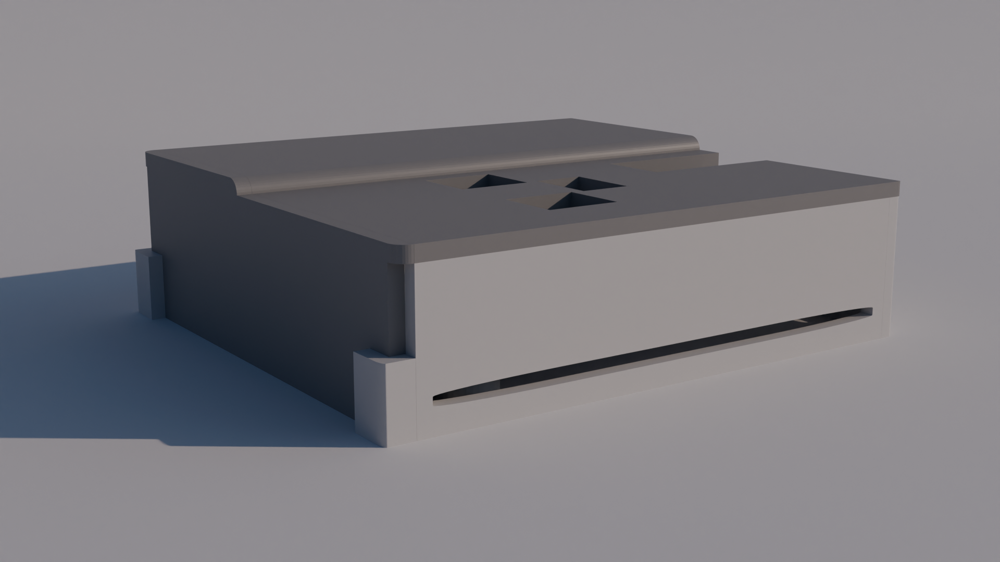
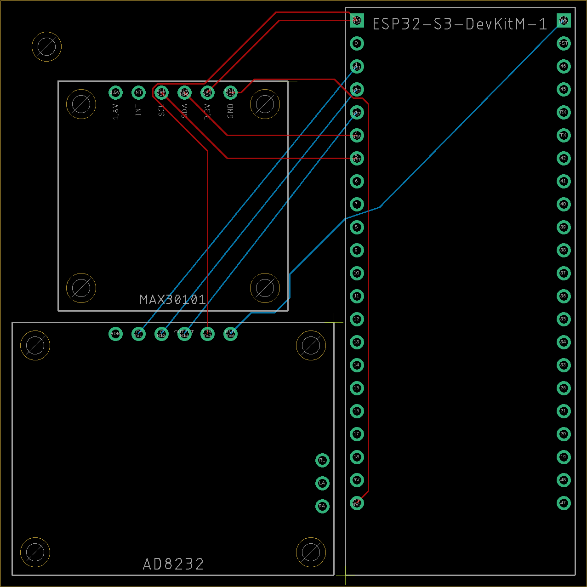
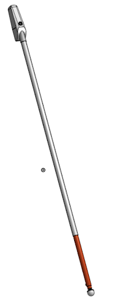
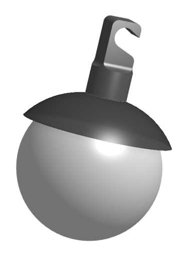
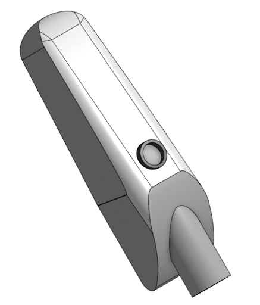
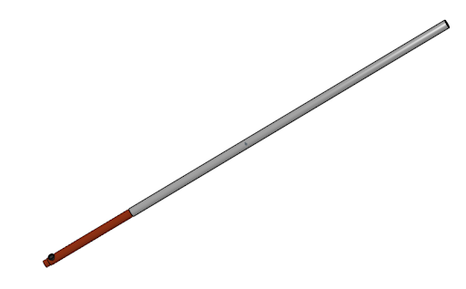
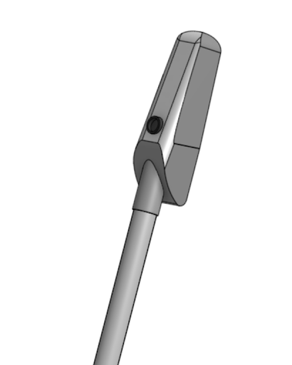
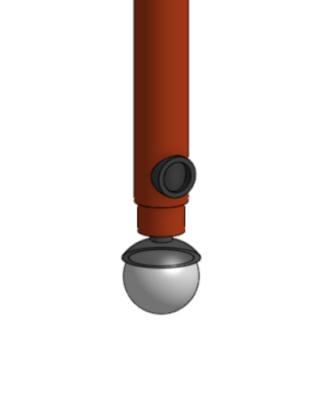

Introduction
My name is Molham Alsaati, and I have a Bachelor of Engineering in Biomedical Engineering. Yes, this is my portfolio. And through the projects here, I hope to show my creativity, willingness to learn new skills to achieve my objectives, and skills in hardware, circuitry, and programming.
At-Home Cardiovascular Health Monitoring Device
Compact and comprehensive device that can measure various cardiovascular bio signals, including ECG, blood pressure, blood volume over time, and blood oxygen saturation (SpO2).
Device Casing

Designed in Blender. Planned to be 3D printed.
Device PCB

Designed in Eagle. Board size is 64.8 X 64.8 mm.
(Device work still in progress...)
Indoor Air Quality Monitoring Device
Versatile air quality monitoring device that can monitor several air quality metrics. These metrics include airborne contaminants and gases, humidity, temperature, and pressure.
IAQ Monitoring Webpage

Programmed with Python.
- Provides real-time data from IAQ monitor
- Presents data in graphs and table
- Drop-down menu allows user to choose which metric to observe
(Device work still in progress...)
Ultrasound Sensor Enhanced White Cane
Conceptualized an improved white cane for the visually impaired that uses ultrasound sensors in key areas to detect obstacles that would be otherwise unnoticed by the user. The design maintains the simplicity of the walking cane but with added warning features that provide an added safety net to improve obstacle avoidance. 3D Models shown below were designed in Onshape.

Model of the entire assembled cane.
Main components

The cane tip is a glide ball made of molded nylon.

The cane handle is made of plastic, with a rubber cover on its underside for grip. The ergonomic cane handle design also helps relieve pressure and hand fatigue.

The cane is primarily made up of fiberglass which is strong, durable, yet lightweight and also efficient for transmitting vibration. The cane is hollow for weight reduction.
Working principle
Two Ultrasound Proximity Sensors in two locations on the cane will be used for obstacle detection. The forward facing sensor in the handle detects objects at and above waist height, which are obstacles the cane wouldn't alert the user to because they are above the ground. The backward facing near the tip of the cane detects any objects that the user missed while sweeping the cane side-to-side, providing an added safety net to the user.
- Device handle has a vibration motor to alert the user, 1 vibration for low obstacles and 2 vibrations for obstacles above the waist
- ESP32 Microcontroller coordinates the operation of the vibration motor and sensors
- Device is battery powered with a Micro-USB or USB-C charging port

The first sensor is placed in the handle and faces forward for detecting objects above the waist.

The second sensor just above the glide ball faces backward to detect objects on the ground.
- Original Website Template From: HTML5 UP